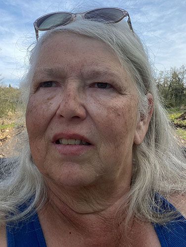

Sherri Winslow
As a long-time Washington State resident and small business owner, I am excited to expand into a new horizon. My professional experiences cover a variety of industries, including; transportation, medical care, office administration, real estate, automotve repair, addictions counseling, ranching, animal care, and volunteer work with domestic violence survivors. I am proud to say that I have two lovely daughters, five grandchildren and one great-grandchild. My husband and I have been married since 1986 and are both military Veterans. We have traveled, as professional drivers, 48 out of 50 States. Once, we touched 46 States in as little as 2 1/2 months; and I love this beautiful country, My interests include: computers, since 1980; photography; music: singing and playing guitar, piano, trumpet, and violin; competitive shooting: pistol, shotgun, and rifle: boating and canoeing, and my fur babies (two beautiful Staffordshire Terriers).
Upon complete of the University of Connecticut's Coding Bootcamp, for Full-Stack Web Development, I look forward to starting a new aspect of my career amd providing businesses, both large and small, with quality services. Along with a varied background, I am developing skills in:
For a full list of skills, please contact me at: